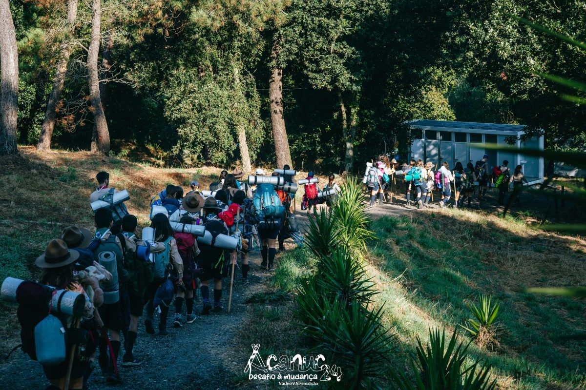
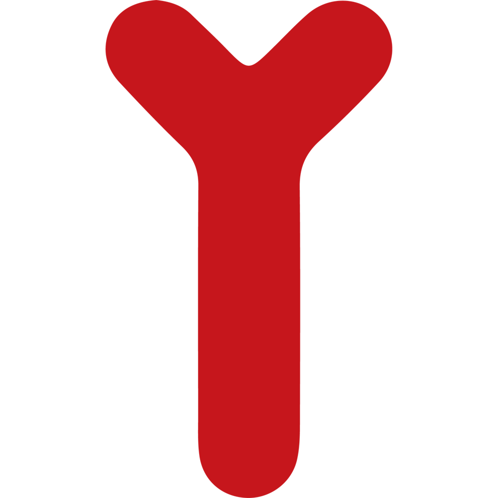
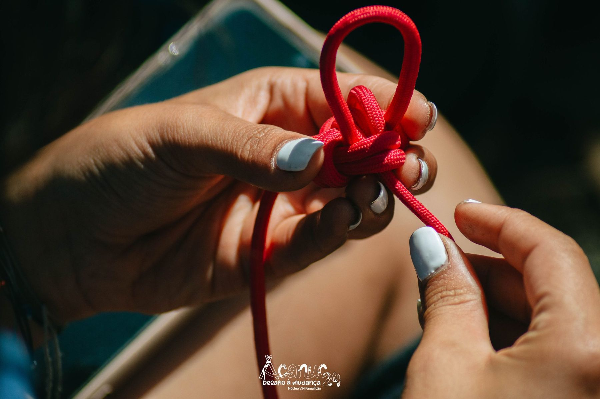
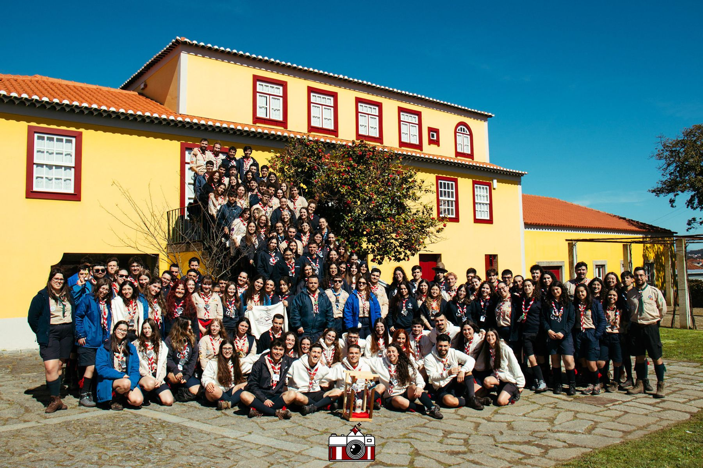
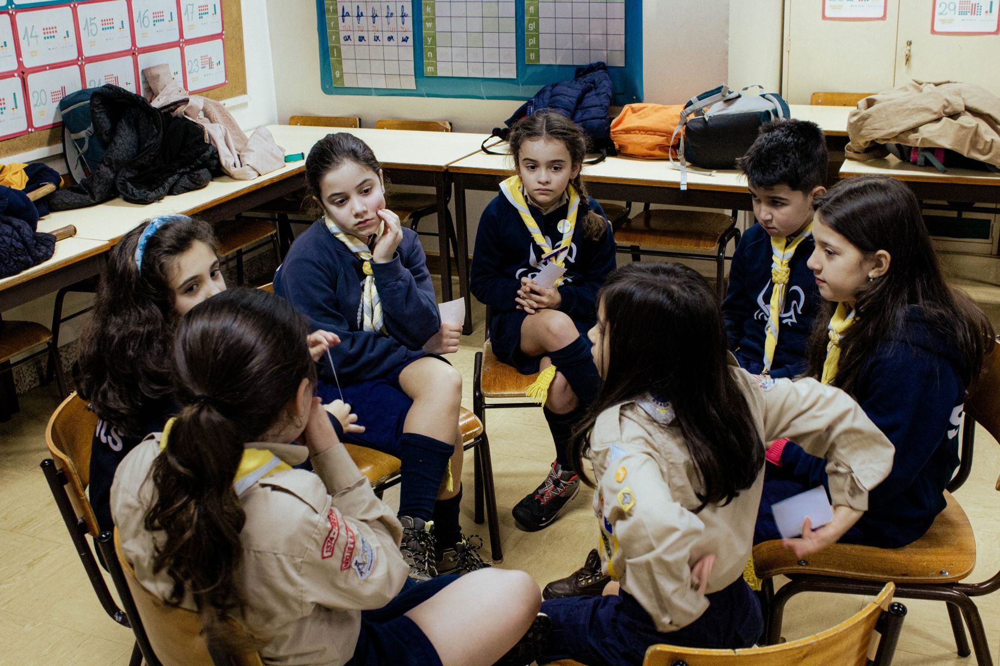
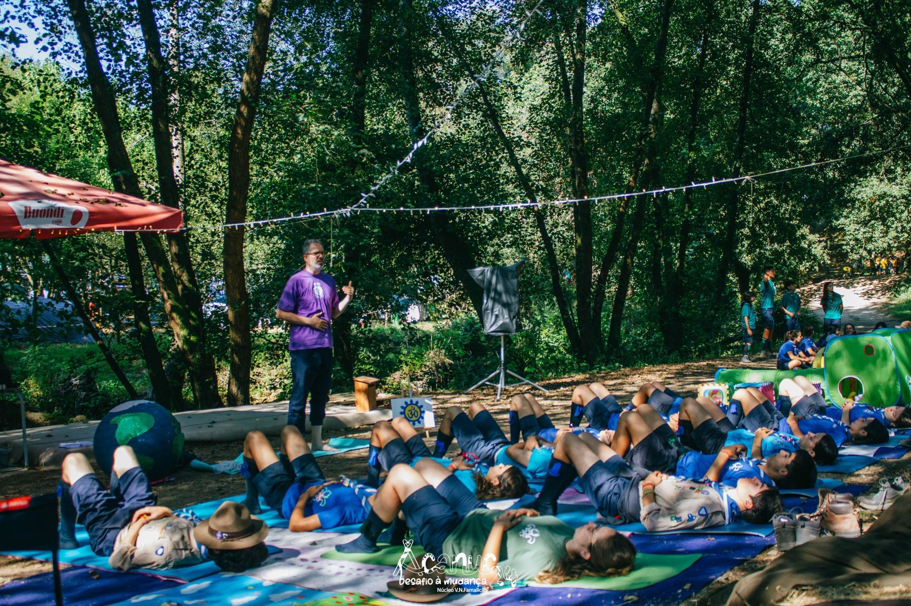
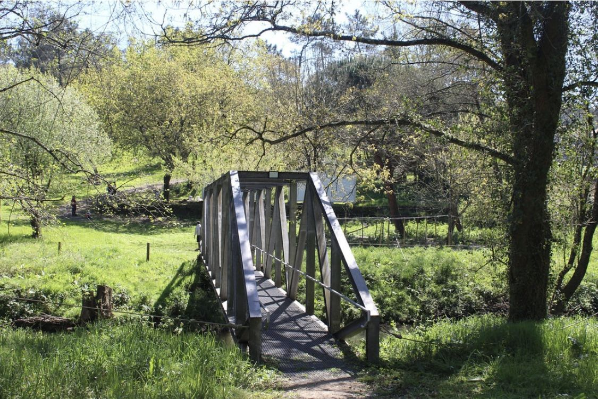
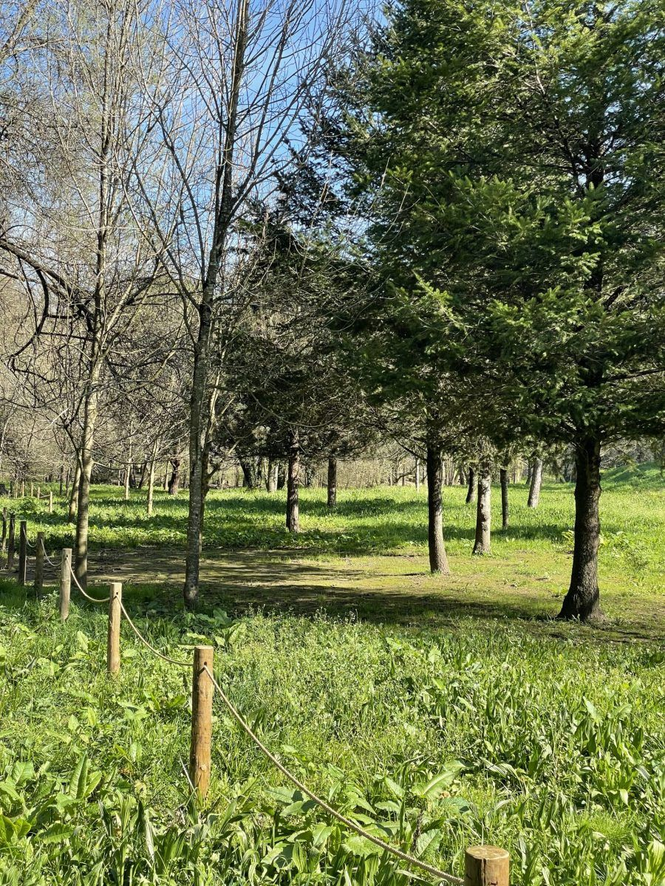

XX Ciclo de Cenáculo: Vive, PartYlha e… Recorda
133 Caminheiros viveram o XX Ciclo de Cenáculo em Seide, de 13 a 15 de março, e aprovaram a Carta de Cenáculo.

Somos o Núcleo do Corpo Nacional de Escutas no concelho: 42 agrupamentos onde crianças e jovens dos 6 aos 22 anos aprendem a viver em grupo, a servir e a cuidar da natureza.
2 814 escuteiros em 42 agrupamentos, acompanhados por 653 dirigentes voluntários.
O Núcleo une, acompanha e forma. Apoia os agrupamentos na gestão, na formação de dirigentes e no material, e organiza os encontros que juntam todo o concelho.

18 aos 22 anos Caminheiros Fazem o seu Caminho como líderes, servidores e cidadãos ativos, construindo pontes de serviço.
Momentos que fortalecem os laços do nosso lenço.
É assim que a Junta de Núcleo assina as visitas que faz aos agrupamentos: tomadas de posse, aniversários, investiduras.
Acampamentos, fogos de conselho, promessas e caminhadas. Guardamos as fotografias de cada encontro do Núcleo.




18dez. 2026
Atividade de demonstração para mostrar como fica a agenda. Data e local por confirmar.
22jan. 2027
Atividade de demonstração. Substituir pelas datas do Plano Anual 2026-27.

O Centro Escutista de Famalicão está aberto a todos: agrupamentos do CNE, outras associações escutistas e outros grupos. Tem zona de acampamento, água, eletricidade, gás, sanitários e chuveiros, capela e lenha para a fogueira.
Ver datas e reservar